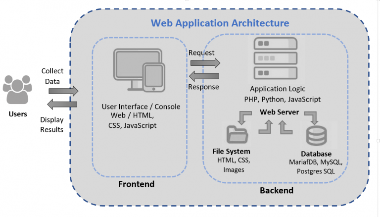

Web technology refers to the tools, software, and protocols that facilitate the use and operation of the World Wide Web. It encompasses a broad range of technologies and standards used for creating, displaying, and interacting with websites and web applications. These technologies include, but are not limited to, programming languages, protocols, and frameworks that enable the functioning and communication of different elements on the internet.
Client/server concepts refer to a computing model where tasks are divided between a client, which requests services or resources, and a server, which provides those services. The client initiates requests, while the server processes them and sends back responses. The server manages data storage and processing, while the client handles user interactions. This model enables scalable systems, efficient resource utilization, and distributed computing across networks, forming the basis for various network-based applications and services.
Web applications consist of several key components, including client-side scripting for user interface interactions, server-side scripting for data processing, and databases for data storage and retrieval. Web servers handle client requests and serve web pages, while frameworks and libraries provide pre-built tools for streamlined development. Application programming interfaces (APIs) enable communication between different software applications. Security measures, including data encryption and user authentication, safeguard the application from potential threats. Efficient integration of these components is essential for creating dynamic, interactive, and secure web applications that deliver optimal user experiences.

Web content comes in various forms, including text, multimedia, interactive elements, visual media, audio clips, social media posts, user-generated content, and e-commerce materials. Textual content like articles and blog posts informs and educates, while multimedia elements such as images and videos enhance user engagement. Interactive content like quizzes and surveys encourages user participation, while visual and audio content caters to different sensory preferences. Social media and user-generated content foster community engagement, while e-commerce content promotes products and facilitates online transactions.
HTTP (Hypertext Transfer Protocol) is the foundation of data communication on the World Wide Web. It is a protocol for transmitting hypermedia documents, such as HTML. The HTTP request-response cycle is the backbone of how web browsers and servers communicate. When a client, typically a web browser, sends an HTTP request to a server, it specifies the action to be performed and the information needed. The server then processes the request and sends back an HTTP response, typically containing the requested content along with a status code indicating the success or failure of the request. This exchange is crucial for the retrieval of web pages, media, and other resources on the internet.
Dynamic web pages are generated on the fly in response to user input or certain conditions, providing personalized and interactive content. This process involves the use of server-side technologies like PHP, Python, or Ruby, which interact with databases to retrieve and manipulate data. These server-side scripts dynamically generate HTML content, integrating it with CSS and JavaScript, before sending it to the user's web browser. This enables the creation of engaging and interactive web experiences tailored to the specific needs and preferences of users, enhancing the overall functionality and user engagement of a website.
Application servers are software frameworks that provide an environment for running and managing applications. They facilitate the deployment, operation, and maintenance of web applications, enabling seamless communication between the application and the web server. Application servers handle tasks such as database access, security, load balancing, and transaction management, allowing developers to focus on the business logic of their applications. They often support multiple programming languages and provide a range of services, including application scalability, high availability, and robust performance, making them essential for the efficient operation of complex web applications and enterprise systems.
Web security involves safeguarding websites and online services from unauthorized access, data breaches, and other cyber threats. It encompasses various measures such as data encryption, secure communication protocols (HTTPS), user authentication, and authorization controls. Security practices like regular software updates, firewall protection, and intrusion detection systems are crucial for identifying and mitigating potential vulnerabilities. Implementing security best practices helps protect sensitive data, maintain user trust, and ensure the integrity and confidentiality of information exchanged over the internet.